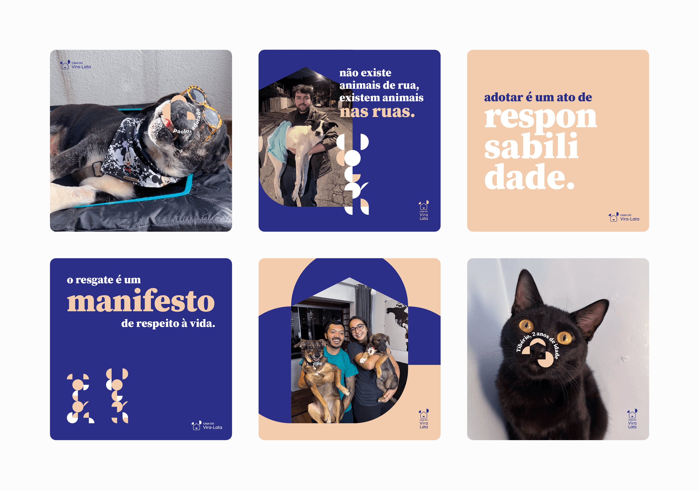
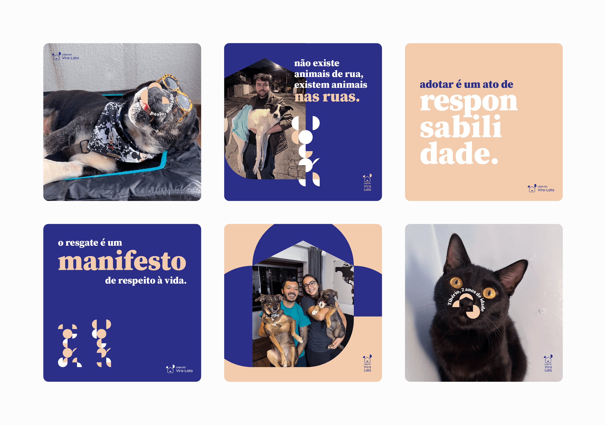

Casa do Vira-Lata (“mutt's shelter”, in free translation) is an independent organization that rescue, rehabilitate and donate stray animals. The project was founded by Gabriel Chaves in April, 2019 and currently relies on partnerships and crowdfunding in order to maintain itself. The NGO has an activist positioning, in favor of animal dignity, against the negligence and preferences for breeds/pedigree.
For the proposed visual identity, it was selected three essential concepts according to the project's values: support, responsibility and family, which influenced all visual elements. The logotype contains the symbols: house (representing home, protection and safety), ears (the left one represents cat ears and the right one represents dog ears), and the snout (which is considered the "fingerprint" of cats and dogs). Through geometric shapes with round corners, chosen colors and typography, the brand created for Casa do Vira-Lata successfully communicates its values and premises and helps the NGO's positioning and awareness.
This identity was created during the 1st semester of Graphic and Digital Design graduation program.
Casa do Vira-Lata
üáßüá∑ A Casa do Vira-Lata √© uma organiza√ß√£o independente que atua no resgate, reabilita√ß√£o e doa√ß√£o de animais em situa√ß√£o de rua. O projeto foi fundado por Gabriel Chaves em abril de 2019 e atualmente conta com parcerias e financiamento coletivo para sua manuten√ß√£o. A ONG tem uma postura ativista e se posiciona em prol da dignidade animal, contra a neglig√™ncia e prefer√™ncia por ra√ßas/pedigree.
Para a identidade visual proposta, foram elencados três pilares essenciais alinhados aos valores do projeto, sendo estes: amparo, responsabilidade e família, que permeiam todos os códigos visuais definidos. O logotipo conta com os símbolos casa (representando o lar, proteção e segurança), orelhas (sendo a esquerda a orelha felina e a direita, a canina) e o focinho (que é considerado a impressão digital dos animais). Através de formas geométricas arredondadas, das cores e tipografias escolhidas, a marca construída para a Casa do Vira-Lata comunica suas premissas e valores, auxilia no posicionamento e reconhecimento da ONG.
O projeto foi desenvolvido no primeiro semestre da pós-graduação em Design Gráfico e Digital, no Senac Lapa Scipião, para a disciplina de Manual da Marca.
OCTOBER, 2022.

 
